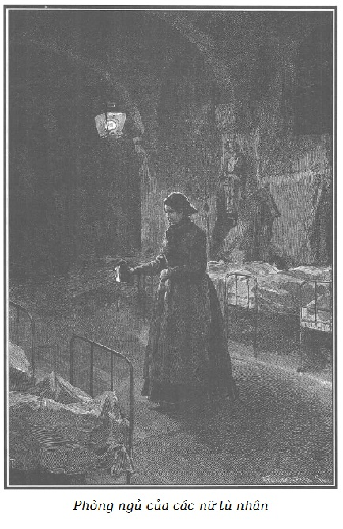

Nhà tù Saint-Lazare dành cho tội phạm nữ, trộm cắp và gái điếm, hằng ngày vẫn được một số bà tới thăm, những người mà lòng nhân từ, tên tuổi, địa vị xã hội buộc mọi người phải tôn trọng.
Những người phụ nữ ấy, lớn lên trong cảnh giàu sang phú quý, hiển nhiên thuộc phái thượng lưu, hằng tuần dành mấy giờ đến bên những nữ tù nhân khốn khổ của Saint-Lazare, rình rập trong những tâm hồn sa đọa ấy một chút mỏng manh vươn lên cái thiện, một chút hối tiếc quá khứ tội lỗi. Họ ủng hộ những xu hướng tốt, tăng hiệu quả của sự hối tiếc và nhờ ma lực của những khái niệm: bổn phận, danh dự, đạo đức, đôi khi họ đưa ra khỏi bùn đen những con người đã bị bỏ rơi, sỉ nhục, khinh rẻ.
Quen sống với cách đối xử nhẹ nhàng, tế nhị của giới thượng lưu, những người phụ nữ can đảm này trước khi rời biệt thự lâu đời của họ, hôn lên vầng trán thơ ngây của con gái họ, trinh trắng như những thiên thần, để đi vào những nhà tù tối tăm, đương đầu với sự ghẻ lạnh tục tằn hoặc những lời lẽ tội lỗi của những nữ tặc, gái điếm…
Trung thành với sứ mệnh đạo đức, họ dũng cảm bước xuống bùn nhơ, đặt bàn tay lên những trái tim hủ bại và nếu còn một đập nhỏ danh dự báo hiệu tia hy vọng còn cứu vớt được, họ cố gắng giành giật lại mảnh tâm hồn bệnh hoạn khỏi nơi sa đọa nghiệt ngã.
Không dám có tham vọng đem so sánh sứ mệnh của các bà với công việc của chúng tôi, chúng tôi có thể nói được chăng, điều giữ chúng tôi đứng vững trong cái công việc lâu dài, nhọc nhằn khó khăn này, đó là niềm tin vững chắc đã khơi dậy được mối cảm tình với những người bất hạnh, trung thực, can đảm, oan uổng, mối cảm tình với sự hối lỗi chân thành, sự thật thà giản dị và ngây thơ, đã gây được sự kinh tởm, ghê sợ, thù ghét tất cả những gì vẩn đục và tội lỗi?
Chúng tôi không lùi bước trước những hiện thực rất xấu xa, nghĩ rằng đạo lý cũng như lửa làm tinh sạch hết thảy.
Lời nói của chúng tôi ít có giá trị, ý kiến của chúng tôi ít có trọng lượng, để chúng tôi dám đứng lên giáo dục hoặc làm cải cách.
Hy vọng duy nhất của chúng tôi là kêu gọi các nhà tư tưởng và những người lương thiện chú ý đến những nỗi cơ cực trong xã hội mà người ta có thể phàn nàn nhưng không thể phủ nhận sự tồn tại của chúng.
Tuy nhiên, giữa những người sung sướng ở đời này, một số bị sốc vì sự sống sượng của những bức tranh đau xót kia, đã vội kêu lên là quá đáng, là không thật, là không thể, để khỏi phàn nàn vì bao nhiêu khổ nạn này.
Điều đó dễ hiểu thôi.
Kẻ ích kỷ, người đầy ắp vàng hoặc đã phè phỡn no nê rồi thì chỉ muốn ngồi tiêu hóa một cách yên tĩnh. Quang cảnh những người nghèo khổ, rét run vì đói lạnh, làm hắn đặc biệt khó chịu. Hắn thích ấp ủ cái giàu có hoặc cái no nê, lim dim mắt trước cảnh khoái lạc của một màn ca vũ kịch.
Tuy nhiên, đại đa số những người giàu có sung sướng lại biết thông cảm với những đau khổ mà họ chưa từng biết. Một vài người còn biết ơn chúng tôi đã chỉ cho họ cách sử dụng tốt lành những của bố thí mới.
Chúng tôi đã được ủng hộ mạnh mẽ, được khuyến khích bởi những sự tán đồng như vậy.
Đối với chúng tôi, còn phần thưởng vinh quang nào bằng những lời ca tụng của một số gia đình nghèo nào đó, đã được khá hơn lên một chút ít nhờ những tư tưởng mà chúng tôi đã gợi lên!
Nói ra điều đó trước cuộc lãng du mới, chúng tôi sẽ đưa bạn đọc đi, sau khi đã dẹp yên được mọi đắn đo ngại ngùng, mời bạn vào Saint-Lazare, tòa nhà to rộng, sừng sững và rùng rợn phố Faubourg-Saint-Denis.
Không hề biết tấn thảm kịch đang diễn ra ở nhà mình, bà d’Harville đến nhà tù, sau khi đã hỏi bà de Lucenay được đôi điều về hai người đàn bà khốn khổ mà lòng tham lam vô độ của lão chưởng khế Jacques Ferrand đã đẩy họ vào cảnh tuyệt vọng.
Bà de Blainval, một trong những người bảo trợ công cuộc đối với các nữ tù nhân trẻ, hôm đó không thể đi cùng với Clémence đến Saint-Lazare, nàng phải đến đấy một mình. Nàng được ông giám đốc đón tiếp niềm nở cùng với một số bà thanh tra, dễ nhận ra với các trang phục màu đen và dải băng xanh có gắn huy chương bạc đeo buông thõng trước ngực.
Một trong những bà thanh tra, một bà đã đứng tuổi, nét mặt trang nghiêm và hiền từ, đang đứng với bà d’Harville trong phòng khách nhỏ, thông với phòng thư ký.
Người ta không thể tưởng tượng được hết những gì tận tâm âm thầm, sáng suốt, mẫn cảm ở những con người đáng kính này, suốt đời làm cái nhiệm vụ khiêm nhường và lặng lẽ là quản giáo các nữ tù nhân.
Không có gì khôn ngoan, dễ thực hành bằng các khái niệm trật tự, lao động, bổn phận mà các bà đem lại cho các nữ tù nhân, với hy vọng những lời dạy dỗ ấy sẽ còn lại sau khi họ ra tù.
Vừa khoan hồng, vừa cứng rắn, nhẫn nại và nghiêm khắc, luôn luôn công bằng và vô tư, các bà ấy, do sự tiếp xúc thường xuyên nhiều năm với tù nhân, có được một thứ khoa học về diện mạo, các bà phán đoán họ khá chắc chắn từ ngay cái nhìn đầu tiên, xếp họ được ngay theo mức độ phẩm chất đạo đức.
Bà thanh tra Armand, người đang đứng với phu nhân d’Harville, là người có độ mẫn cảm cao nhất với tính tình của các nữ tù nhân. Lời nói và sự phán đoán của bà có uy tín rất lớn.
Bà Armand nói với Clémence:
– Vì bà Hầu tước có nhờ tôi giới thiệu cho bà những tù nhân đáng được bà lưu ý bởi cách cư xử hoặc biết hối lỗi chân thành, tôi có thể gửi gắm bà một con người bất hạnh mà tôi thấy đáng thương hơn là có tội. Tôi nghĩ không lầm khi quả quyết rằng vẫn còn có thể cứu vớt được cô bé này, một cô bé khốn khổ, khoảng mười sáu, cùng lắm là mười bảy tuổi.
– Cô ấy làm gì mà bị giam giữ?
– Cô ấy phạm tội có mặt ở quảng trường Élysées vào buổi chiều. Đã có lệnh nghiêm cấm và trừng phạt nặng những cô gái như vậy không được phép lui tới, ban ngày, hoặc ban đêm một số nơi công cộng. Quảng trường Élysées nằm trong số những đường đi dạo bị cấm, do đó cô ấy bị giam giữ.
– Và bà thấy cô ấy đáng được lưu ý?
– Tôi chưa thấy ai có nét mặt thanh tú và hồn nhiên như thế. Thưa nữ Hầu tước, bà thử tưởng tượng một khuôn mặt nữ đồng trinh. Điều làm cho vẻ mặt ấy thêm sự khiêm nhường là hôm đến đây, cô ấy ăn mặc như một cô gái nông thôn vùng ngoại ô Paris.
– Vậy cô ấy là gái quê?
– Không, thưa bà. Các ông thanh tra đã nhận ra cô ấy. Cô ấy ở trong một quán liều của khu Nội Thành – nơi cô ấy đã vắng mặt trong khoảng hai, ba tháng. Nhưng vì cô ấy không xin xóa tên khỏi sổ của Sở Cảnh sát, nên vẫn bị nhà cầm quyền bắt đến đây.
– Có thể cô ấy rời Paris để cố gắng tự cải tạo?
– Thưa bà, tôi cũng nghĩ vậy, và đó là điều làm tôi chú ý. Tôi đã hỏi về quá khứ của cô ấy, rằng có phải cô ấy từ nông thôn lên đây không, hy vọng nếu đúng như thế, thì cô ấy còn muốn trở lại cuộc đời lương thiện.
– Cô ấy trả lời thế nào?
– Nhìn tôi bằng đôi mắt xanh to, buồn và đẫm lệ, cô ấy nói giọng rất mực dịu dàng: “Thưa bà, cảm ơn tấm lòng tốt của bà, nhưng con không thể nói được gì về quá khứ của mình. Người ta đã bắt con, con có tội. Con không phàn nàn gì.” – “Nhưng cô từ đâu đến đây? Cô ở đâu sau khi ra khỏi thành phố? Nếu cô về nông thôn để tìm một lối sống lương thiện thì cứ nói đi, làm rõ ra, ta sẽ cho viết giấy gửi ông cảnh sát trưởng thả cô ra. Người ta sẽ xóa tên cô trong sổ, khuyến khích cô đi vào đường đúng đắn.” – “Con van bà, bà đừng hỏi con, con không trả lời được.” – “Nhưng ra khỏi đây, cô lại muốn trở về với cái quán liều ấy à?” – “Ồ, không bao giờ!” Cô ấy kêu lên. “Thế cô sẽ làm gì?” – “Có trời mới biết”, cô ấy trả lời, đầu gục xuống.
– Lạ thật, cô ấy nói năng thế nào?
– Lời lẽ rất ngay ngắn, thưa bà. Thái độ rụt rè, lễ độ nhưng không thấp hèn. Hơn thế, mặc dù giọng nói và cái nhìn rất mực dịu dàng, nhưng đôi khi trong giọng nói, cử chỉ lại có một vẻ buồn rất quý phái, làm tôi ngạc nhiên, khó hiểu. Nếu cô ấy không thuộc cái tầng lớp khốn khổ này, thì tôi nghĩ rằng niềm tự hào ấy là dấu hiệu của một tâm hồn ý thức được sự cao thượng của mình.
– Thật là cả một thiên tiểu thuyết! – Clémence nghe hết sức chăm chú và kêu lên, càng thấy đúng như lời Rodolphe, không gì vui bằng làm việc thiện. – Quan hệ của cô ấy với các nữ tù nhân khác thế nào? Nếu cô ấy có tâm hồn cao thượng như bà nghĩ, chắc cô ấy khổ sở lắm vì phải sống giữa những người bạn xấu xa?
– Lạy Chúa! Tôi nhận xét theo tình trạng và thói quen, thưa bà Hầu tước, cái gì ở người con gái này cũng đáng ngạc nhiên. Chỉ mới ba ngày thôi, cô ấy đã có sức ảnh hưởng đối với các nữ tù nhân.
– Chóng thế sao?
– Họ cảm thấy phải quan tâm và gần như kính trọng.
– Sao? Những người khốn khổ ấy…?
– Đôi khi họ có một bản năng đặc biệt tế nhị để phát hiện, để đoán ra những phẩm chất cao quý của người khác. Có điều họ thường ghét những người mà họ buộc phải thừa nhận là hơn họ.
– Thế họ có ghét cô bé này không?
– Hoàn toàn không, thưa bà. Không ai quen cô gái này trước khi cô ấy vào đây. Lúc đầu họ chú ý vì sắc đẹp của cô ấy. Những đường nét thanh thoát lạ thường, lại nhuốm một màu xanh xao, ốm yếu, thật cảm động, khuôn mặt buồn và dịu dàng ấy khiến họ lưu ý hơn là ghen ghét. Cô ấy lại còn rất lặng lẽ, thêm một điều để ngạc nhiên đối với những con người mà đa số chỉ tìm cách quên mình bằng tiếng ồn, lời nói và cử động. Cuối cùng, mặc dù đứng đắn và kín đáo, cô ấy lại tỏ ra biết thương cảm nên bạn bè không phải khó chịu vì thái độ lãnh đạm. Chưa hết. Đã một tháng nay, ở đây có một con người bất trị biệt danh là Sói Cái vì tính tình hung dữ, táo tợn, cục súc. Một cô gái hai mươi tuổi, cao lớn, rắn rỏi như nam giới, vẻ mặt khá đẹp nhưng cứng rắn. Chúng tôi nhiều khi buộc phải đem giam vào xà lim để trị tính hung hãn. Vừa đúng hôm kia, cô ta ra khỏi xà lim, còn tức tối vì bị giam giữ, lúc ấy là giờ ăn, cô gái mà tôi đang kể với bà không muốn ăn. Cô ấy buồn bã nói: “Ai muốn lấy suất bánh mì của tôi?” – “Tôi!”, Sói Cái nói đầu tiên. “Tôi!”, một con người gần như dị dạng tên là Mont-Saint-Jean nói tiếp. Chị ta là một thứ trò vui, một người để cho các tù nhân khác bỡn cợt, mặc dù có mặt chúng tôi, và mặc dù chị ta mang thai đã được vài tháng. Cô gái đem bánh mì cho người này, làm cho Sói Cái điên lên: “Tôi xin suất bánh mì của cô trước!” – “Đúng thế, nhưng chị ấy có thai, chị ấy cần hơn”, cô gái trả lời. Tuy thế, Sói Cái giật mẩu bánh mì khỏi tay Mont-Saint-Jean và bắt đầu thóa mạ, tay vung con dao. Vì Sói Cái rất hung dữ, ai cũng gờm, không ai dám bênh Sơn Ca mặc dù trong lòng ai cũng thấy cô đúng.
– Bà vừa nói cái tên gì thế?
– Sơn Ca, đó là tên, hay đúng hơn, biệt danh được ghi vào sổ tù của người mà tôi bảo trợ, và tôi cũng mong rằng sẽ được bà bảo trợ. Hầu hết ai ở đây cũng có một cái tên mượn như thế.
– Tên gọi thật lạ lùng.
– Trong tiếng lóng quái gở của họ, nó có nghĩa là cô hát rong, bởi người ta nói cô ấy có giọng hát rất hay. Tôi tin như thế, bởi giọng của cô thật mê hồn.
– Thế cô ấy thoát được khỏi tay Sói Cái độc ác như thế nào?
– Càng giận dữ hơn vì sự bình tĩnh của Sơn Ca, Sói Cái chạy tới, miệng chửi, tay vung dao. Tất cả tù nhân kêu lên khiếp đảm, chỉ mình Sơn Ca nhìn mà không sợ con người đáng gờm ấy, mỉm cười chua chát, nói bằng giọng êm ái: “Ôi, chị giết em đi! Giết em đi! Em muốn thế… nhưng đừng làm em đau đớn quá!” Những lời nói ấy, theo lời người kể lại cho tôi nghe, được nói ra một cách giản dị và đau lòng, khiến tất cả tù nhân đều rưng rưng nước mắt.
Bà d’Harville cũng cảm thấy nghẹn ngào:
– Tôi cũng tin như thế!
Bà thanh tra nói tiếp:
– May thay, con người xấu nhất cũng có khi nghĩ lại. Nghe những lời nhẫn nhục đến xé lòng ấy, sau này Sói Cái mới nói ra, cô ta thấy xúc động đến tâm can, ném con dao xuống đất, giẫm lên la lớn: “Tôi hăm dọa cô là tôi sai, vì tôi khỏe hơn cô, cô không sợ lưỡi dao của tôi là cô can đảm. Tôi thích những người can đảm, cho nên từ nay ai đụng đến cô, tôi sẽ bảo vệ cô.”
– Tính khí lạ lùng thật!
– Câu chuyện Sói Cái càng làm tăng thêm ảnh hưởng của Sơn Ca và hiện nay, điều chưa từng có, hầu như không có tù nhân nào mày tao với cô ấy, đa số kính nể và giúp cô ấy trong từng việc nhỏ, những việc tù nhân có thể làm cho nhau. Tôi đã hỏi chuyện một số tù nhân cùng phòng để tìm hiểu nguyên nhân vì sao họ quý trọng cô ấy, họ trả lời: “Có cái gì đó mạnh hơn ý nghĩ của chúng tôi. Quả thật đó là một người không giống chúng tôi.” – “Ai nói điều đó với các chị?” – “Không ai cả, tự cảm thấy thôi.” – “Nhưng dựa vào đâu?” – “Vào hàng nghìn việc. Ngay như tối qua, trước khi đi ngủ, cô ấy quỳ và đọc kinh. Sói Cái nói cô ấy đọc kinh bởi cô ấy có quyền đọc.”
– Nhận xét kỳ lạ thật!
– Những người phụ nữ đau khổ này không có tí ý niệm nào về tôn giáo nhưng không bao giờ họ thốt một lời báng bổ, xúc phạm thánh thần. Bà sẽ thấy trong tất cả các phòng của nhà tù chúng tôi có những bàn thờ, tượng Đức Mẹ được trang trí và dâng lễ vật do họ làm ra. Mỗi Chủ nhật họ đốt nhiều nến làm lễ tạ ơn. Những người đi nhà thờ riêng ở đây, thái độ rất đúng mực. Nhưng nói chung, quang cảnh những thánh đường là nặng nề đối với họ, làm cho họ sợ. Trở lại chuyện Sơn Ca, các bạn tù của cô ấy còn nói: “Cô ấy khác chúng tôi ở vẻ mặt hiền lành, buồn bã, ở lời nói…” Chợt Sói Cái đang nghe chuyện, nói xen vào: “Còn điều này nữa, đúng là cô ấy không giống chúng tôi. Bởi vì sáng nay, trong phòng ngủ, không hiểu sao chúng tôi thấy ngượng khi thay quần áo trước mặt cô ấy.”
– Một điều tế nhị kỳ quặc giữa bao cảnh sa đọa! – Bà d’Harville kêu lên.
– Đúng, thưa bà, trước đàn ông và giữa họ với nhau, họ không biết ngượng ngùng nhưng lại không khỏi bẽn lẽn khi bị chúng tôi hoặc những người từ thiện như bà đến thăm, bắt gặp họ ăn mặc hở hang. Thành thử cái bản năng thẹn thùng sâu kín mà Chúa đã ban cho chúng ta, ngay ở những người như vậy, cũng chỉ lộ ra với những người mà họ kính nể.
– Cũng đáng mừng khi thấy một số cảm xúc tốt còn mạnh hơn sự sa đọa.
– Đúng thế, những người phụ nữ này biết tỏ ra tận tâm, khi sự tận tâm đó được đặt đúng chỗ thì rất đáng quý. Còn có một tình cảm thiêng liêng đối với những người không biết kiêng sợ gì cả. Đó là tình mẫu tử, họ thấy tự hào, thấy rất vui. Không người mẹ nào tốt hơn thế, họ không quản ngại bất cứ điều gì nếu được giữ con bên mình. Để nuôi con, họ giành cho họ những hy sinh lớn nhất. Bởi vì như họ đã nói, chỉ có đứa bé ấy không khinh họ.
– Như vậy họ cũng tự giác sâu sắc về sự xấu xa của mình.
– Người ta khinh họ không bằng họ tự khinh mình. Ở một số người hối lỗi chân thành, cái vết nhơ xấu xa ban đầu ấy không thể xóa được, dẫu họ có được điều kiện sống tốt hơn. Có người hóa điên vì bị ám ảnh khôn nguôi bởi sự nhơ nhuốc ấy. Bởi vậy, thưa bà, tôi không lấy làm lạ nếu nỗi buồn sâu sắc của Sơn Ca lại do sự hối hận như thế gây ra.
– May thay cho loài người, thưa bà, những sự ăn năn hối lỗi như thế lại nhiều hơn ta tưởng. Ý thức đòi trừng phạt không bao giờ ngủ yên hoàn toàn, hay đúng hơn, thật là điều kỳ lạ, có thể nói đôi khi linh hồn thức trong lúc thể xác thiếp đi. Đó là điều mà tối qua tôi đã nghiệm thấy một lần nữa ở con người mà tôi vẫn săn sóc này.
– Ở Sơn Ca?
– Vâng, thưa bà.
– Như thế nào?
– Khi các tù nhân đã yên giấc, tôi thường đi một vòng trong phòng ngủ. Bà không tưởng tượng được vẻ mặt của họ biến đổi thế nào trong giấc ngủ đâu. Khá nhiều người trong số họ ban ngày vô tư lự, chanh chua, ngổ ngáo, táo tợn, tôi thấy hoàn toàn thay đổi khi giấc ngủ tước mất những gì cố tình trên nét mặt. Bởi, hỡi ôi, cái xấu cũng có tính tự cao của nó. Ô, thưa bà, bao nhiêu điều đáng buồn bộc lộ trên những khuôn mặt lúc đó mệt nhọc, rã rời, u tối. Bao nhiêu điều phải rùng mình! Bao nhiêu tiếng thở dài đau đớn thốt ra không tự giác từ những giấc mơ mang dấu ấn một sự thật nghiệt ngã! Lúc nãy tôi nói với bà về cô gái có biệt danh Sói Cái, một cô gái hoang tàn, bất trị. Mới đây chừng nửa tháng, cô ta chửi tôi tàn tệ trước mặt tất cả tù nhân. Tôi nhún vai, sự thản nhiên của tôi làm cô ta điên lên. Chắc là để xúc phạm tôi đau hơn, cô ta tệ đến mức chửi cả mẹ tôi thường đến thăm tôi ở đây.
– Thực quá tệ!
– Thú thật là dù biết chửi như thế là vô lý, cô ta đã làm tôi tổn thương. Sói Cái thấy điều đó và cho là thắng lợi. Vào khoảng nửa đêm hôm đó, tôi đi tuần tra phòng ngủ. Tôi lại gần giường cô ta, ngày mai cô ta mới bị nhốt vào xà lim. Tôi ngạc nhiên thấy nét mặt của cô ta gần như hiền lành, so với sự đanh đá, láo xược thường ngày, những đường nét như van lơn, đượm buồn, ăn năn, hối tiếc. Môi hé mở, ngực như tức thở, và điều tôi không tưởng tượng được ở cô ta, hai giọt nước mắt lớn chảy ra từ đôi con ngươi sắt đá! Tôi yên lặng nhìn trong mươi phút thì nghe cô ta thốt ra mấy lời: “Xin lỗi… Xin lỗi! Bà ấy…” Tôi lắng nghe chăm chú hơn, nhưng trong tiếng thì thầm không rõ, tôi chỉ nghe được tên tôi… bà Armand… nói với tiếng thở dài.
– Trong giấc ngủ, cô ta hối hận vì đã xúc phạm bà…
– Tôi cũng nghĩ thế. Và điều này làm tôi bớt nghiêm khắc đi. Hẳn là trước mặt bạn tù, cô ta muốn huênh hoang khuếch đại tính thô lỗ sẵn có của mình, thật là khốn khổ. Có thể một bản năng tốt khiến cô ta biết hối hận trong giấc ngủ.
– Thế hôm sau, cô ta có tỏ ra hối tiếc gì với bà không?
– Tuyệt nhiên không. Cô ta vẫn thô lỗ, táo tợn, hung hăng. Tôi xin cam đoan với bà không có gì khơi gợi tình thương bằng những điều quan sát tôi vừa nói với bà. Có thể là ảo tưởng, nhưng tôi tin rằng trong giấc ngủ, những con người khốn khổ ấy trở lại tốt hơn, hay nói đúng hơn, trở lại là chính mình với tất cả các tính xấu, đã đành, nhưng đôi khi cũng với một vài bản năng tốt, lúc này không bị che giấu bởi sự khoác lác đáng ghét. Từ những nhận xét này, tôi đi đến kết luận, những con người này không đến nỗi xấu như họ tỏ ra. Tin tưởng như vậy nên trong việc giáo dục, tôi thường đạt được những kết quả, mà nếu hoàn toàn tuyệt vọng về họ, tôi sẽ không thể có được.
Bà d’Harville không giấu được sự ngạc nhiên khi thấy bao nhiêu lương tri, lý trí cao siêu, kết hợp với những tình cảm nhân đạo, rất cao cả lại rất thực tiễn có được ở một nhà giáo dục bình thường vô danh như vậy.
– Bà phải can đảm lắm, có đức độ lắm, – Clémence nói sau vài phút in lặng – mới không lùi bước trước một công việc bạc bẽo, chỉ đem lại những niềm vui hiếm hoi!
– Không đâu, tôi quả quyết với bà như vậy. Những điều tôi làm, nhiều người khác làm còn thành công hơn và thông minh hơn. Một bà thanh tra ở khu phố Saint-Lazare, trông coi tội phạm hình sự, đáng được bà chú ý hơn. Bà ấy nói với tôi, sáng nay mới bắt một cô gái bị buộc tội giết con. Tôi chưa bao giờ nghe một câu chuyện đau lòng như vậy. Cha của cô gái khốn khổ này, một người thợ mài ngọc lương thiện, đã hóa điên vì đau khổ khi biết cái việc điếm nhục của con gái mình. Hình như không còn cảnh khổ nào bằng gia đình ấy, cư trú ở tầng sát mái một ngôi nhà trên phố Temple.
– Phố Temple! – Bà d’Harville ngạc nhiên kêu lên. – Người thợ ấy tên gì?
– Con gái ông ta tên là Louise Morel.
– Đúng rồi!
– Cô ấy làm việc ở nhà một ông chưởng khế đáng kính, ông Jacques Ferrand.
Clémence đỏ mặt:
– Gia đình khốn khó đó đã được giới thiệu cho tôi. Nhưng tôi không ngờ lại còn thêm một tai họa khủng khiếp như vậy. Còn Louise Morel…
– Cô ấy kêu vô tội. Cô ấy thề là đứa bé đã chết. Lời nói của cô ấy có vẻ thật. Thưa bà Hầu tước, vì bà đã quan tâm đến gia đình này, nếu bà chiếu cố đến thăm cô ấy, tấm lòng nhân hậu của bà sẽ làm dịu bớt nỗi thất vọng hãi hùng của tội nhân.
– Chắc chắn tôi sẽ đến. Ở đây tôi có hai người để bảo trợ chứ không phải một. Louise Morel và Sơn Ca. Bởi tất cả những điều bà nói về Sơn Ca làm tôi xúc động vô cùng. Nhưng phải làm gì để cô ấy được tự do? Sau đó tôi sẽ tìm việc và lo cho tương lai của cô ấy.
– Thưa bà Hầu tước, với những quan hệ rộng rãi của bà, bà dễ dàng xin cho cô ấy ra khỏi nhà tù, chỉ một sớm một chiều thôi. Điều đó hoàn toàn tùy thuộc ý ông cảnh sát trưởng. Lời gửi gắm của một bậc đáng tôn kính sẽ có tác dụng quyết định đối với ông ta. Nhưng câu chuyện của tôi đã đi quá xa vấn đề Sơn Ca rồi. Tôi thú thật với bà là tôi không ngạc nhiên khi thấy ở cô ấy, ngoài nỗi xót xa về sự ô uế buổi đầu, còn một mối ân hận khác cũng không kém day dứt.
– Bà muốn nói gì, thưa bà?
– Có lẽ tôi lầm chăng? Nhưng tôi không ngạc nhiên rằng cô gái này, ra khỏi sự sa đọa, không rõ trong hoàn cảnh nào, lại còn mang một mối tình chân thật vừa hạnh phúc, vừa đau khổ giày vò cô ấy.
– Vì lẽ gì mà bà tin như vậy?
– Tối qua, khi đi tuần tra phòng ngủ, tôi lại gần giường Sơn Ca, cô ấy ngủ say. Tôi cảm động ngắm khuôn mặt đẹp một cách thần tiên ấy, bỗng tôi nghe thấy rất khẽ, bằng giọng tôn kính, buồn và say đắm, cô ấy gọi tên một người. Và tôi chỉ có thể nói cái điều bí ẩn ấy với bà, cái tên ấy là Rodolphe.

.Bà d’Harville nghĩ đến Hoàng thân và kêu lên:
– Rodolphe!
Nhưng nghĩ cho cùng Đức ông Đại công tước xứ Gerolstein không liên quan gì đến ông Rodolphe của Sơn Ca. Nàng nói với bà thanh tra đang ngạc nhiên vì tiếng thốt của mình:
– Thưa bà, cái tên ấy làm tôi ngạc nhiên bởi sự tình cờ lạ lùng, một người bà con của tôi cũng có tên như vậy. Nhưng những điều bà cho tôi biết về Sơn Ca càng làm tôi chú ý hơn. Tôi có thể gặp cô ấy hôm nay, lát nữa, được không?
– Được quá, thưa bà. Nếu bà muốn, tôi sẽ đi tìm cô ấy. Tôi cũng muốn biết thêm tin tức về Louise Morel, ở bộ phận bên kia của nhà tù.
– Cảm ơn bà. – Bà d’Harville trả lời, đứng lại một mình.